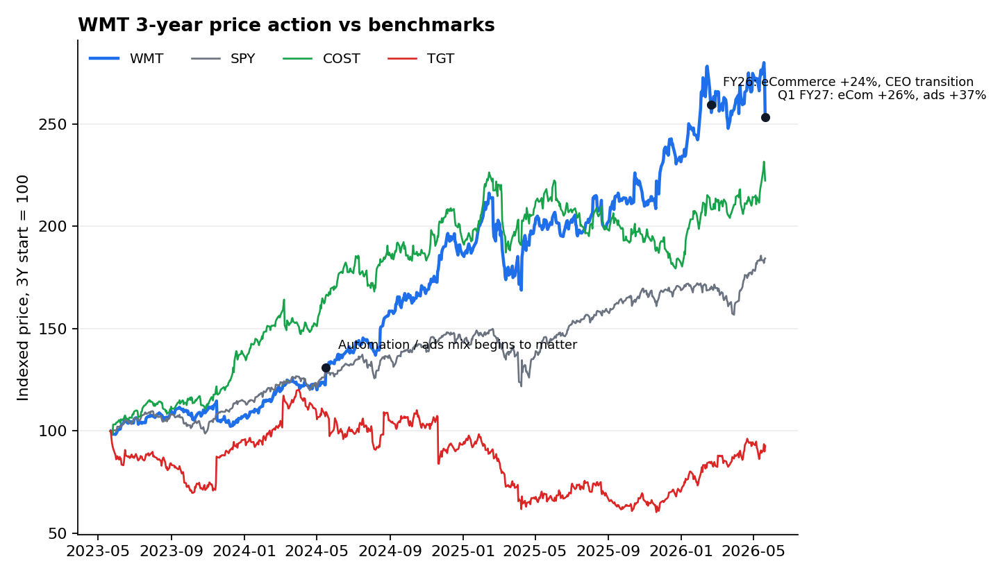
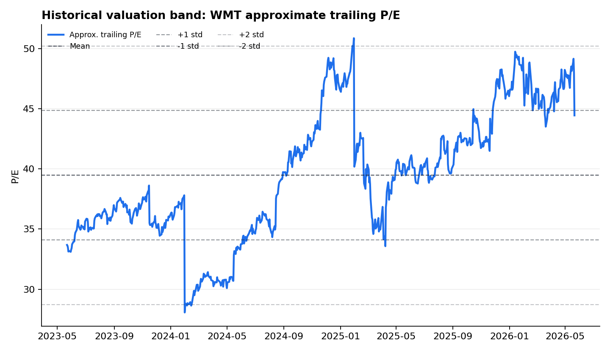
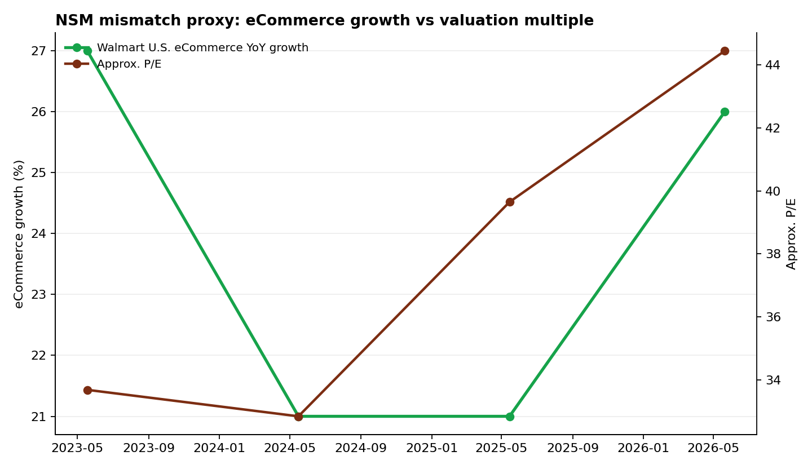

Ticker: WMT
Date: 2026-05-22
Classification: Watchlist / targeted follow-up
结论：Walmart 是高质量复利资产，但目前还不是一个“已经证明的优先错价”。值得进入下一步的小范围跟踪，而不是立即投入完整深度研究。核心原因是：公司正在从“低毛利大卖场”转为“门店履约网络 + 高频会员 + Marketplace/广告/数据”的平台化零售生态；但这个故事已经被一线卖方显著捕捉，且当前股价仍隐含较高的未来利润兑现要求。
最有价值的研究问题不是“Walmart 是否好”，而是市场是否仍用短期 EPS / 消费者景气 / 燃油与关税成本来锚定股票，而低估第二张损益表的持续性与利润穿透。Q1 FY27 后股价从高位回撤，给了验证窗口：如果电商、广告、会员、3P 与履约效率能在接下来 2-4 个季度继续让经营利润增速高于销售增速，错配会变得更可投资；如果只是卖方叙事而非现金利润，当前高倍数会继续压缩回报。
| Item | Latest Situation |
|---|---|
| Market Data & Positioning | 2026-05-21 收盘价约 $121.34，市值约 $967B，52 周区间约 $93.43-$135.16。Q1 FY27 公布后单日显著回撤，主要反映 EPS 指引、燃油/关税/消费者压力和高估值下的容错率。 |
| Key Financial Metrics | FY26 收入 $713B，经营利润 $29.8B，自由现金流 $14.9B。Q1 FY27 总收入同比 +7.3%，全球电商 +26%，全球广告 +37%，会员费收入 +17.4%，但自由现金流为 -$1.9B。 |
| Price Action & Technicals | 30 日技术层从温和上行转为事件性破位：5 月 21 日收盘 $121.34，RSI 降至 35.5，MACD 柱转负，价格跌破 12/26/50 日 EMA。技术面提示短期去风险仍在，但也使基本面验证窗口更清晰。 |
| Positioning | 新闻与期权流显示市场在财报前主要交易“指引/宏观/成本”波动。SEC Form 4 近期较多但以例行高管/董事交易为主，未构成独立投资信号。卖方主流仍偏正面，买方证据更克制。 |
| Key Metric | Value | Implication |
|---|---|---|
| Global eCommerce | +26% | CEO NSM 的核心代理变量：门店网络正在变成高频履约网络，而不是单纯线下客流。 |
| Global Advertising | +37% | 第二张损益表的高毛利利润池。若广告/3P/会员持续复合，估值锚可从传统零售 P/E 转向平台化零售。 |
| FY26 FCF | $14.9B | Capex 密集转型下的现金约束仍存在。Q1 FY27 FCF 为负，市场会继续要求利润质量证明。 |
Pricing Anchor & Embedded Expectations: 当前市场锚仍是前瞻 P/E。WMT 以 FY26 EPS $2.73 计约 44x，以 FY27 指引 $2.75-$2.85 中点计仍约 43x。这不是传统零售低估值，而是已经在为“高质量复利 + 平台化利润池”付费。错价只在一种情况下成立：未来 EPS 和 EBIT margin 的上修幅度大于当前倍数已经反映的程度。
Sell-side ruler: Morgan Stanley 采用约 44x F28E EPS $3.19 得到 $140 目标价，并用约 22x F28E EV/EBITDA 交叉验证；Bernstein 用 37x Q5-Q8 EPS $3.63 得到 $134；UBS 的“第二张损益表”报告则把目标价提高到 $147，核心假设是广告、会员、Marketplace、WFS 和数据变现会成为 2030 年前 EBIT 增量的主要来源。
| Company | Market Cap | P/E | EV/EBITDA | Revenue Growth | Margin / FCF |
|---|---|---|---|---|---|
| WMT | ~$967B | ~44x FY26 | ~22x | FY26 +4.7% | FY26 op margin 4.2%; FCF $14.9B |
| COST | ~$466B | ~58x LTM | ~35x | FY25 +8.2% | 会员粘性更纯，但广告/即时履约可选性较弱 |
| TGT | ~$57B | ~16x FY26 | ~8x | FY26 -1.7% | 估值低，但份额/品类/可选消费压力更大 |
| AMZN | ~$2.9T | ~37x FY25 | ~18x | FY25 +12.4% | 广告和 3P 是 WMT 第二张损益表的上限参照 |



| Lens | Assessment |
|---|---|
| CEO NSM | 更快、更低成本、更高可得性的全渠道履约：店仓一体、3 小时内配送、自动化履约中心、Sparky/AI 购物入口、每周高频食品与日用品复购。 |
| Long-term investor NSM | 第二张损益表 EBIT 占比：广告、会员费、Marketplace、WFS 履约、数据/零售媒体的利润贡献，以及这些业务能否让合并经营利润率从 4% 多持续上移。 |
| Market-consensus NSM | 短期仍偏 EPS 指引、美国同店、燃油/运费、关税、消费者强弱和药房/GLP-1 价格结构。卖方已经理解平台化逻辑，但事件交易仍被短期指引主导。 |
| Mismatch category | Healthy lag, partially recognized. 不是叙事陷阱，但也不是隐蔽错价。市场已给高倍数，真正未证明的是利润池的持续年限和落到底线的比例。 |
Potential opportunity: 有机会，但属于“验证型机会”。如果 WMT 在 FY27 连续证明：销售增速中个位数、经营利润增速高个位数到双位数、第二张损益表 EBIT 占比上升、FCF 在高 Capex 后恢复，那么当前回撤后的估值可被证明合理，甚至有 10%-20% 的目标价空间。
Main risk: 市场并非完全错误。MS、Bernstein、UBS 已经用 37x-44x 的前瞻 P/E 框架给出平台化溢价，当前股价仍要求长期利润兑现。若广告/3P/会员增长放缓，或管理层持续把毛利投入价格与履约而非落到底线，WMT 会从“结构性重估”退回“高质量但昂贵的防御股”。
Decision: 放入观察名单并做一轮针对性研究，而非立刻进入完整深挖。下一步只需要验证三个问题：第二张损益表是否真的贡献大部分 EBIT 增量；Walmart+ 与三小时达是否提升高毛利品类购买；FY27 指引是否在 Q2/Q3 具备上修路径。
| Validation Path | Signal | Confirm / Falsify |
|---|---|---|
| Q2 FY27 | Operating income growth | 若在销售 +4%-5% 下经营利润 +7%-10% 兑现，说明 mix/效率有效；若毛利和费用再次拖累，则错配减弱。 |
| Alternative profits | Ads / 3P / membership | 需要继续高双位数增长，并看到管理层更清晰披露利润贡献或 margin bridge。 |
| Cash conversion | FCF after capex | Capex 维持约销售额 3%-3.5% 的同时，FCF 不能长期被自动化和履约投资吞噬。 |
collected_resources/wmt_sec_edgartools_extract.jsoncollected_resources/earnings_transcripts/collected_resources/sell_side_pdfs/ and collected_resources/sell_side_md/collected_resources/CNBC_*.md, collected_resources/20251216_robonomics_ai_beneficiaries_non_tech.md, collected_resources/20260203_mobiledevmemo_amazon_openai_advertising_not_agentic_commerce.mdcollected_resources/podwise_walmart_discussion.mdcollected_resources/wmt_technical_30d.csv, collected_resources/market_price_history_3y.csv, OpenBB/yfinance outputs.